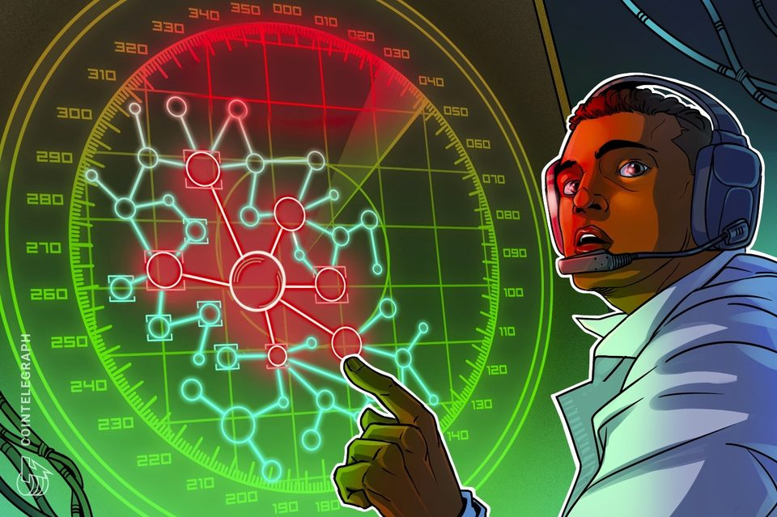
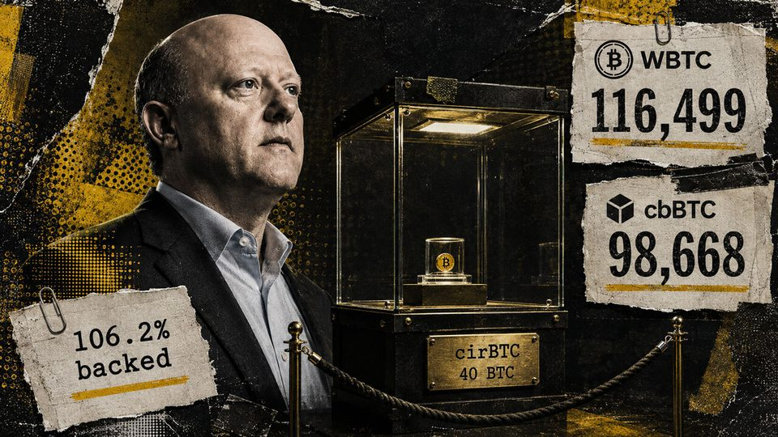
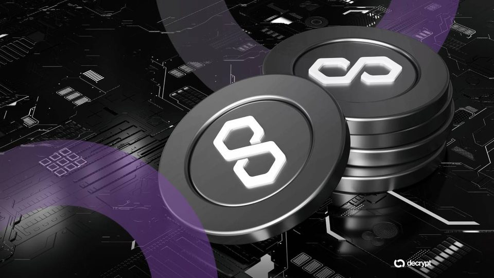
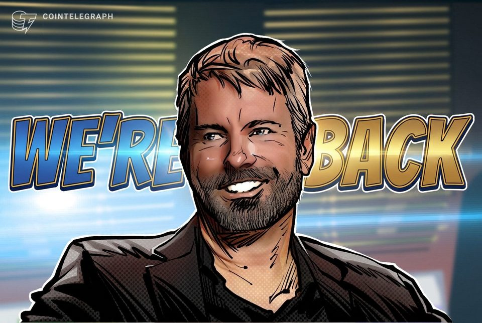
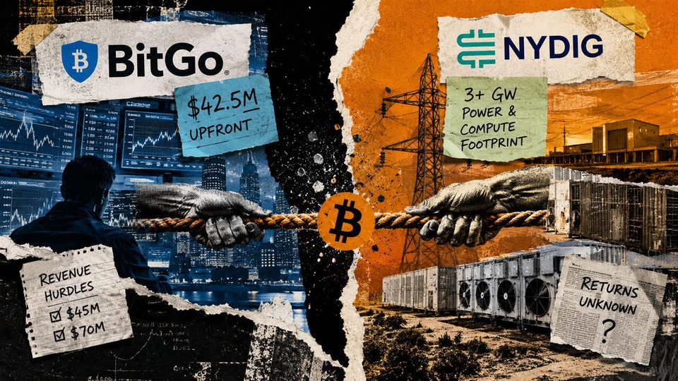
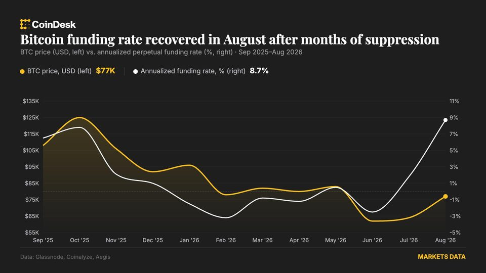

Cronos halts network after Tectonic exploit involving estimated $75M
Crypto.com CEO Kris Marszalek said the company’s app and exchange were unaffected by the Tectonic breach and continued operating normally.
Ex-White House Teleprompter Operator Fined for Prediction Market Insider Trading
Gabriel Perez used his access to Trump's speeches before delivery to bet on "presidential mention market" contracts, profiting more than $107,500 before the CFTC caught up with...

CEO Jeremy Allaire says Circle built “the platform for the internet financial system”, but cirBTC has only 40 BTC
Circle's wrapped Bitcoin was overcollateralized at its Aug. 27 snapshot, yet WBTC and cbBTC remain thousands of times larger as Arc becomes the next distribution test. The post...
Michael Saylor hints at first bitcoin purchase in two months
Michael Saylor hints at first bitcoin purchase in two months
Bitcoin's new quantum defenses, 18.9M SOL cancelled: Hodler's Digest
Bitcoin moves toward a post quantum future, Solana validators agree to curb rampant inflation and the bull case from Bernstein is for Bitcoin to peak at $500K this cycle.

Polygon Quietly Patched Security Flaws in Two Hard Forks Before Disclosing Them
The Austin and Kyoto hard forks, deployed quietly on the Bor and Heimdall clients before public disclosure, closed denial-of-service and consensus-hardening flaws that Polygon...
US treasury relies on stablecoins to fund short-term debt, but they can't fix its $28B long-bond problem
GENIUS reserves stop at 93 days while Treasury expands liquidity buybacks across 10- to 30-year debt. The post US treasury relies on stablecoins to fund short-term debt, but they...
From Hawala to Swift: Inside the 1,000-year battle to move money safely
From Hawala to Swift: Inside the 1,000-year battle to move money safely

Saylor signals Strategy is ‘Back' to Bitcoin buying
Michael Saylor’s “We’re Back” post hints Strategy may resume Bitcoin buying after a two-month pause to strengthen its balance sheet.
Bitcoin ETFs Snap Nine-Day Inflow Streak as Ethereum Funds Extend Their Run
Spot Bitcoin ETFs shed $201.9 million on Aug. 28, ending a nine-day inflow run, even as Ethereum funds extended a 10-day streak with fresh cash.

Wall Street's favorite Bitcoin broker just walked away from institutional trading to chase gigawatts of power
BitGo is paying roughly $42.5 million upfront for institutional trading capabilities as NYDIG prioritizes a claimed 3+ GW power-and-compute footprint, leaving profitability...

Crypto market makers are cashing in on bitcoin's rally - without betting on direction
Crypto market makers are cashing in on bitcoin's rally - without betting on direction